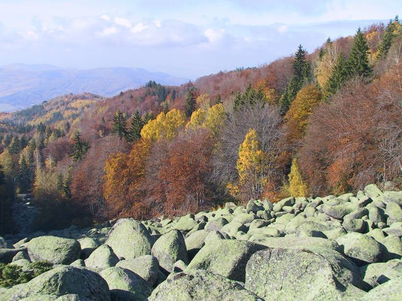

Витоша е най-посещаваната българска планина. Издига се непосредствено над София и е един от символите на нашата столица. На пръстите на едната ръка се броят големите градове в света, още по-малко столиците, които притежават такова природно богатство. Витоша е най-значимата в Планско-Завалската планинска система. С най-високия си връх - Черни връх (2290 м н.в.) тя се нарежда на 4-то място по височина сред планините на България. Витоша е люлката на българското планинарство. Датата 27.VIII.1895 г. се смята за начало на организираното туристическо движение в страната. Тогава Черни връх е изкачен от 300 мъже и жени - нещо нечувано и невиждано за онова време. Всяка година на този ден хиляди туристи изкачват върха.
В древността планината е била позната под имената Скомиос, Скопиос, Скомброс, което на старогръцки означава “острата, стръмната планина”. Тези наименования са се съхранили в днешното име на връх Скопарник. Името Витоша се е появило през средните векове, като за първи път се среща в документ от ХI век. Има две версии за произхода му: първата е, че е тракийско-древнобългарско и означава “двуделна”, “разделна” планина; втората (по-правдоподобна и приемлива) е, че Витоша произлиза от личното име Витош.
Витоша е типична купеновидна планина - една от малкото в България. Има леко издължен профил от северозапад към югоизток. Изградена е предимно от гранити, но се среща и карст, особено в южните ґ части. Уникално природно явление са така наречените “каменни реки” (морени) - натрупвания на огромни заоблени гранитни камъни по много от речните долини, достигащи до 2 км дължина и 50 метра широчина. Особено изразителни и красиви са морените в местността Златните мостове. Подобен вид образувания се срещат и по други български планини, но като витошките няма никъде. Те са символът на планината.
От 1935 г. на Черни връх действа метеорологична станция, а има и много постове, най-вече по хижите. Ето и някои сравнителни данни за София и Черни връх: средномесечна и средногодишна температура - за най-студения месец януари в София е минус 1,7° С, а за Черни връх - минус 8,3° С. За най-топлия месец за София - юли е 21,2° С, а за Черни връх е август - съответно 9,0° С. Средногодишната температура за София е 10,5° С, а за Черни връх 0,3° С. За витошкия климат особено характерно явление е инверсията (най-вече през декември и януари). Когато София е потънала в мъгла и студ, планината е заляна от слънце и топлина - средногодишно това се случва в 15 дни. На Черни връх средно 140 дни в годината са ледени - тогава и максималните температури са отрицателни, а мразовитите дни (когато само минималните температури са отрицателни) са 222. Зимата във високите части трае между 5 и 7 месеца, като истински летни месеци са само юли и август. Средногодишните валежи на Черни връх (предимно от сняг) са 1178 литра на кв.м, като най-много вали през юни - 142 литра на кв.м, а най-малко през септември - 71 литра на кв.м. През март се образува най-дебела снежна покривка на Витоша. Черни връх е твърде негостоприемен - средно 250 мъгливи дни през годината и около 50 ясни и е един от най-ветровитите върхове у нас. Със средногодишна скорост на вятъра 9,3 м/сек той се нарежда на второ място от измерваните върхове след старопланинския Мургаш (10,3 м/сек), пред Ботев (9,1 м/сек) и Мусала (7,6м/сек). Само 7% от дните на Черни връх са тихи.
По посока на часовниковата стрелка границите на планината са: на север и североизток - Софийското поле, на изток - Егуло-Палакарийската седловина (1195 м н.в.) я отделя от Плана планина; на юг достига Самоковското поле, а седловината Бука преслап (1090 м н.в.) я дели от Верила; на запад от нея е Пернишкото поле, а на северозапад - границата с Люлин планина минава през Владайската седловина (860 м н.в.). Витоша заема 278 кв. км площ, а размерите ґ са 18 на 20 км. Въпреки определено компактния си характер планината условно се подразделя на 4 основни дяла - Северен, Източен, Югозападен и Северозападен.
Склоновете на Северния дял се спускат стръмно към Софийското поле, над което доминира връх Камен дел (1862 м н.в.) и затова този дял се нарича още Каменделски. От своя страна той се разделя на 4 части - Владайска (няма ярко изразени върхове, но тук се намира един от най-популярните туристически обекти - Златните мостове); Княжевска - в нея е най-високият връх на целия дял - Лъвчето (2052 м н.в.), както и върховете Средец (1969 м н.в.), Черната скала (1869м н.в.), Копитото (1348 м н.в. с телевизионната кула); Драгалевска (с алпийския двуглав връх Комините (1620 м н.в.), с Ушите (1906 м н.в.), Камен дел и др.; Симеоновска (без изпъкващи върхове). Тук е построен Симеоновският кабинков лифт.